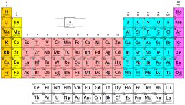
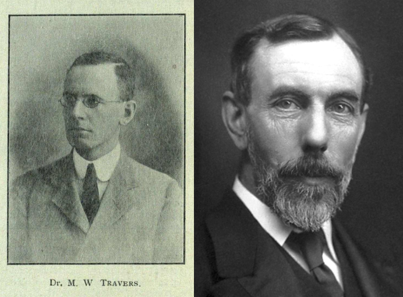
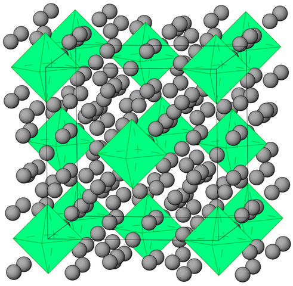

Kripton
Kripton
36
Kr
Kripton
| Simbolo elemento | Kr |
| Numero atomico | 36 |
| Massa atomica relativa | 83.798 |
| Temperatura di fusione | -156.6°C |
| Temperatura di ebollizione | -152.3°C |
| Stato di aggregazione | Gassoso |
| Densità (20°C) | 3.48 g/cm3 |
| Numero di ossidazione | 2.4 |
| Energia di prima ionizzazione | 1350,8 KJ/mol |
| Raggio atomico | 189 pm |
| Configurazione elettronica | [Ar]3d104s24p6 |
| Energia di ionizzazione [eV] | 13,9996 |
| Percentuale nella composizione della massa terrestre | 2*10-8% |

Il kripton è considerato sicuro in forma di gas nobile e non tossico per gli esseri umani nelle normali condizioni di utilizzo.
L'inalazione di piccole quantità di kripton gassoso di solito non è dannosa, ma, dato che è un gas asfissiante, l'esposizione a grandi quantità potrebbe avere effetti avversi.
Per quanto riguarda la radioattività, non è un elemento particolarmente pericoloso perché ha quasi tutti gli elementi presenti in natura stabili, tranne il 78Kr che però ha un tempo di dimezzamento di 9.2*1021.
La storia del kripton è legata alla sua scoperta avvenuta nel 1898 ad opera dei chimici britannici Sir William Ramsay e Morris Travers. Isolato per la prima volta dalla frazione gassosa dell'aria, il kripton fu identificato come un nuovo elemento gassoso. Il suo nome deriva dal greco "kryptos," che significa "nascosto," riflettendo la difficoltà di isolare questo gas incolore e inodore.

Oltre alla sua scoperta, il kripton ha svolto un ruolo significativo nella definizione del metro. Nel 1960, la lunghezza del metro è stata ufficialmente definita in termini della lunghezza d'onda di una riga spettrale specifica emessa dal kripton-86. Questa definizione ha fornito una base più precisa per la misurazione delle distanze, contribuendo agli standard di misurazione globali.
La prima sintesi del fluoro di kripton (KrF2) è stata un risultato rilevante in campo chimico. Questo composto è stato ottenuto per la prima volta da parte dei ricercatori Margarete von Bünau e Karl-Otto Christe nel 1963. La sintesi coinvolge la reazione tra il kripton e il fluoro (F2) in condizioni specifiche. Il KrF2 è un fluoruro di kripton che ha proprietà di interesse a causa della sua reattività. La sua formazione ha sfidato l'idea precedente che i gas nobili fossero generalmente inerti chimicamente. La scoperta del KrF2 ha contribuito a comprendere meglio le possibilità di formazione di composti dei gas nobili. La sintesi del KrF2 ha aperto nuove prospettive nella chimica dei gas nobili, dimostrando che sotto certe condizioni essi potevano reagire e formare legami chimici con altri elementi. Questo risultato ha avuto un impatto significativo nell'ambito della chimica inorganica e nella comprensione delle caratteristiche chimiche dei gas nobili.
Pur essendo un gas nobile il krypton si lega con altri elementi diversi dal fluoro.
Infatti sono stati scoperti i cristalli di idruro di kripton (Kr(H2)4) che possono essere coltivati solo a pressioni superiori ai 5GPa e hanno una struttura cubica centrata sulla faccia in cui gli ottaedri di krypton sono circondati da molecole di idrogeno orientate in modo casuale.
